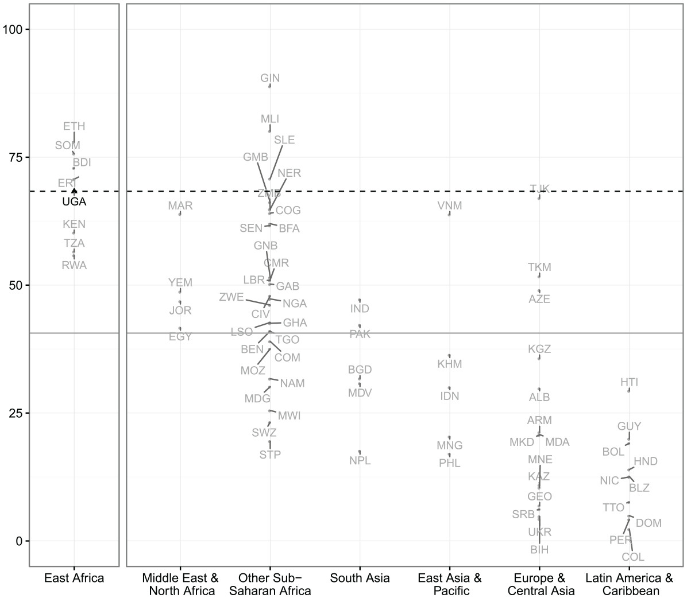
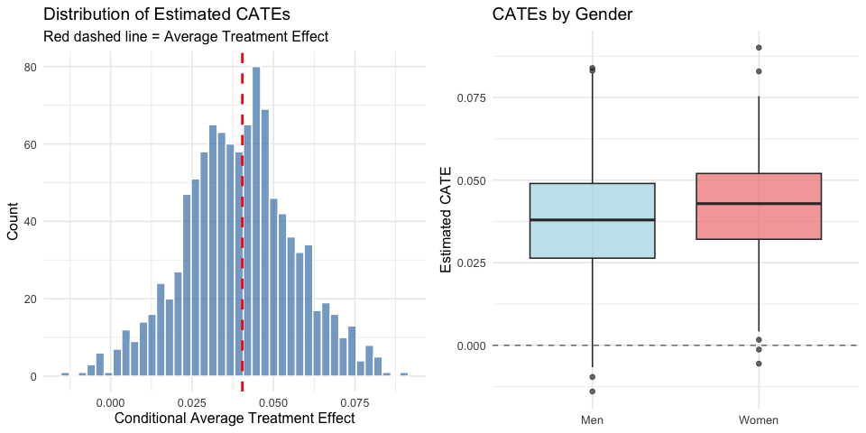
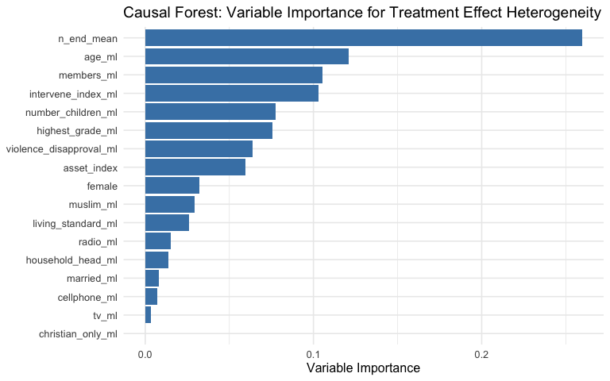

Countering Violence Against Women by Encouraging Disclosure
A Mass Media Experiment in Rural Uganda Replication & Causal Forest Extension
Santiago Sierra · Yen Hsi Lo · Ishika Naranj
Causal Inference in AI Models — ESMT Berlin · March 2026
Based on Green, Wilke & Cooper (2020, Comparative Political Studies)
and Cooper, Green & Wilke (2020, AER P&P)
"When is it acceptable for a man to hit his wife?"

Average % of women who say it is acceptable for a man to hit his wife in at least one of five scenarios, by country (DHS, 2001–2015). Dashed line = Uganda (~70%).
The Treatment
One of three VAW video vignettes screened at village film festivals in rural Uganda (first minute)
Research Question & Experimental Design
Can a mass media campaign of VAW video vignettes screened at community film festivals encourage reporting of violent incidents and ultimately reduce intimate partner violence in rural Uganda?
Honest estimation: separate subsamples for splitting vs. estimation
4,000 trees, trained on 1,041 compliers
17 baseline covariates, clustered at village level
Validation
Method
ATE
SE
OLS
0.064
0.020
Causal Forest
0.050
0.020
Calibration: mean.forest.prediction p = 0.004
CATE Distribution

Treatment effects range from near zero to +0.09. Not everyone benefits equally.
Who benefits most?
By Gender
Group
GATE
95% CI
Women
0.080*
[0.013, 0.146]
Men
0.037
[−0.013, 0.086]
Women benefit more than twice as much as men.
By Baseline Willingness
Group
GATE
95% CI
Low baseline
0.037
[−0.003, 0.077]
High baseline
0.100*
[0.024, 0.176]
Films reinforce existing inclinations rather than converting skeptics.
By Socioeconomic Status
Group
GATE
95% CI
Low SES
0.042
[−0.004, 0.088]
High SES
0.067*
[0.009, 0.125]
Higher SES individuals show a larger, significant effect.
Variable importance (top 4): Age (0.19), Baseline reporting (0.15), Married (0.12), Household head (0.11)
• BLP: Christian only households significant moderator (p=0.028)
• Victimization CF: ATE = −0.122 (SE: 0.050)
Takeaways
Replication succeeds — point estimates match closely across all main results (Tables 1–4, AER P&P Table 1)
The campaign works, but not by changing minds — it reduces the fear of speaking up, and violence drops
Not everyone benefits equally — women, those already inclined to report, and higher SES individuals gain the most
Policy implication — target screenings toward women; build on existing pro reporting norms rather than trying to change deep attitudes
Paper Col 3: Others Observe 0.058, Campaign 0.064**, Interaction −0.073*
The campaign increases solo reporting by ~6 pp. The "Others Observe" effect among non treated shrinks among treated.
The campaign reduces the need for corroborating witnesses.
Backup B
Causal Forest: Technical Details
Calibration Test (Reporting)
Term
Estimate
SE
p
mean.forest.prediction
1.033
0.392
0.004
differential.forest.prediction
−2.870
0.977
0.998
Forest captures the ATE well. Formal heterogeneity test does not reject homogeneity — CATEs should be interpreted with caution.
Victimization CF (Women Only)
Metric
Value
ATE
−0.122 (SE: 0.050)
Calibration p
0.007
Variable Importance

Backup C
Discrepancies & Methodology
Men's individual reporting channels — We find a significant midline "Involve Parents" effect (0.082**) that the paper does not. Likely from differences in LASSO covariate selection or SE computation.
P values — We use two sided parametric; the paper uses one sided randomization inference (1,000+ permutations within blocks).
LASSO — Covariates pre selected from the original pipeline and loaded directly.
Standard errors — sandwich::vcovCL, equivalent to multiwayvcov::cluster.vcov.
Ordered probit — Did not converge in our replication; we report OLS instead.
Village level specification — Regular OLS SEs (one obs. per village), no resample, matching original code.
Backup D
Balance & Sample
Sample Sizes
Sample
N
Total endline respondents
1,956
Compliers (panel)
1,041
Women compliers
321
Men compliers
720
All women (endline)
1,036
Villages in analysis
110
Treatment villages (IPV=1)
48
Control villages (IPV=0)
64
Randomization blocks
16
Balance Check
All covariates balanced across treatment and control except married_ml (p=0.006) —
minor and consistent with randomization noise across many tests.
110 villages in analysis (48 treatment, 64 control, 16 blocks).
Treatment assigned at village level via blocked random assignment.